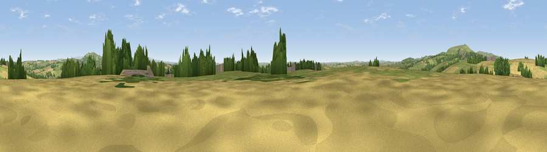

Viewpoint near St Ive Keason
#22532 in England · top 40% of its area beats it · near St Ive KeasonThe view, rendered

A 360° render of this exact spot computed from the terrain model, tree cover and land cover — summer colours, afternoon light, calibrated against photographs of famous viewpoints. Real trees, hedges and buildings will differ in detail.
The panorama
Grey silhouette: terrain skyline in each direction (720 bearings, Earth curvature and refraction included). Dashed green: skyline with trees (+15 m) and buildings (+8 m) as obstacles. Blue strip: how far the ground is visible on each bearing.
Where the view opens
Wedge length = distance to the farthest visible ground on that bearing (vegetation-aware). Rings at 10, 25 and 50 km.
What fills the view
56% grassland · 28% cropland · 13% woodland · 3% built-up
Angular shares of the visible panorama (visual magnitude), not map area. Landscape diversity 0.46 (0–1 Shannon).
Key numbers
More beautiful places nearby
The staircase of upgrades: each row has a higher view potential than everything closer. Driving times are estimates from straight-line distance, calibrated against real road routing — check an actual route before setting out.
| Place | Direction | Drive | Score |
|---|---|---|---|
| Viewpoint near St Ive Keason | NNW · 1 km | ~4 min | 55.0 |
| Trewoodgate Hill | SSE · 4 km | ~9 min | 61.3 |
| Caradon Hill | WNW · 5 km | ~11 min | 78.5 |
| Kit Hill | ENE · 7 km | ~15 min | 80.3 |
| Viewpoint near Seaton | S · 13 km | ~24 min | 81.1 |
| Viewpoint near Downderry | S · 13 km | ~25 min | 81.5 |
| Viewpoint near Downderry | SSE · 14 km | ~26 min | 83.5 |
| Viewpoint near Polperro | SSW · 21 km | ~35 min | 83.7 |
50.48678, -4.37981 · source: screening · position refined by local search. Computed location — check access rights before visiting.